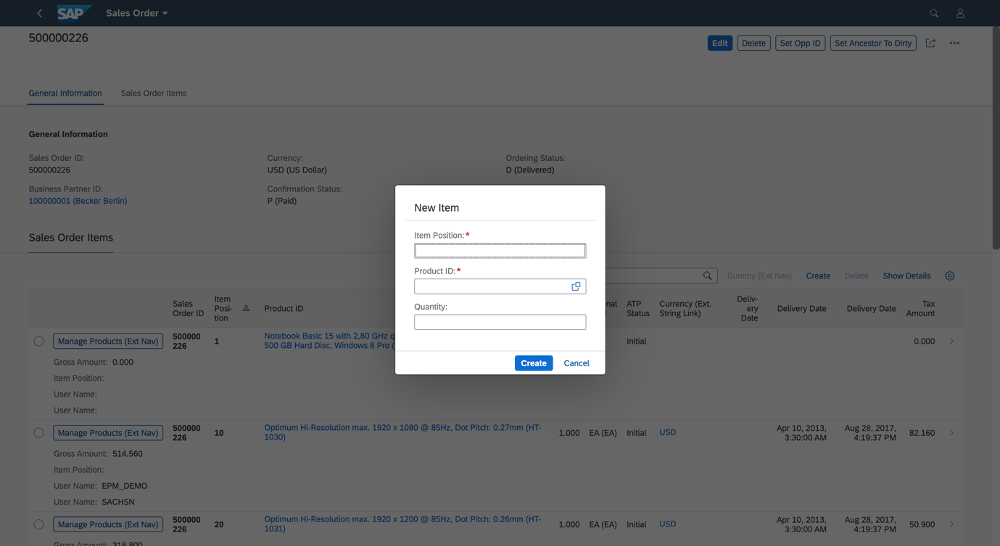

You can enable this feature in the manifest setting by adding the property
createWithParameterDialog and passing the properties of related entity set
as follows:
"createWithParameterDialog" : {
"fields" : {
"<fieldName>" : {"path":"<fieldname>"},
"<fieldName>" : {"path":"<fieldname>"}
}
With this setting, the option to create sub-objects using a dialog appears on the object page.
"pages": [
{
"entitySet": "STTA_C_SO_SalesOrder_ND",
"component": {
"name": "sap.suite.ui.generic.template.ObjectPage",
"settings": {
"showRelatedApps": true,
"gridTable": false,
"sections": {
"to_Item::com.sap.vocabularies.UI.v1.LineItem": {
"navigationProperty": "to_Item",
"entitySet": "STTA_C_SO_SalesOrderItem_ND",
"tableSettings": {
"createWithParameterDialog" : {
"fields" : {
"SalesOrderItemID":{"path": "SalesOrderItemID"},
"ProductID" : {"path":"ProductID"},
"Quantity" : {"path":"Quantity"}
}
}
}
}
}
}
},
Ensure that the properties are related to the entities.
Ensure that all the mandatory fields of the entities are part of the create dialog.
Ensure that the application is non-draft.
The default title of the dialog is New Item and the key in i18n file
is CREATE_DIALOG_TITLE. The default toast message is Item
Created and the key in i18n file is ITEM_CREATED. You can
override these i18n keys.
Please note that this topic is currently only applicable to SAP Fiori elements for OData V2.